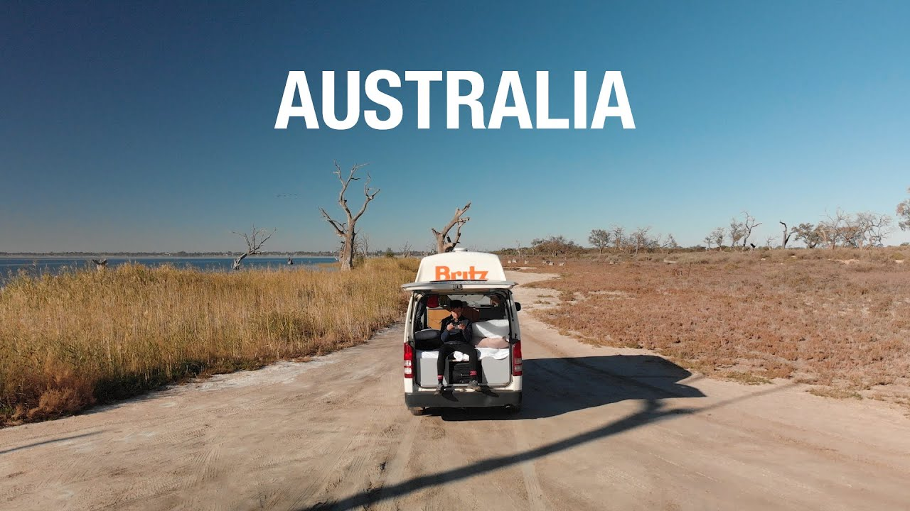
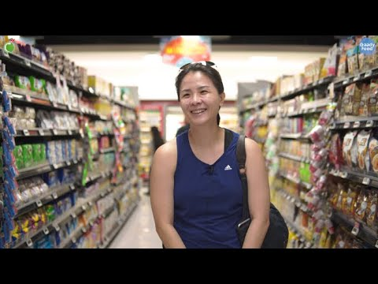
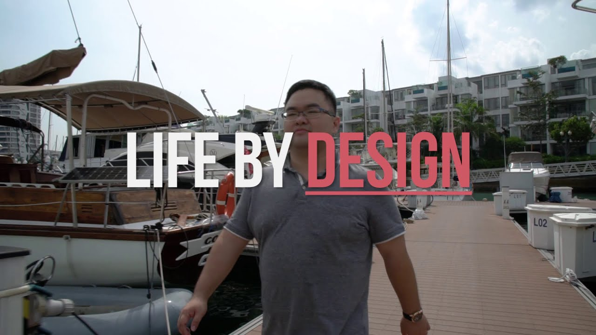
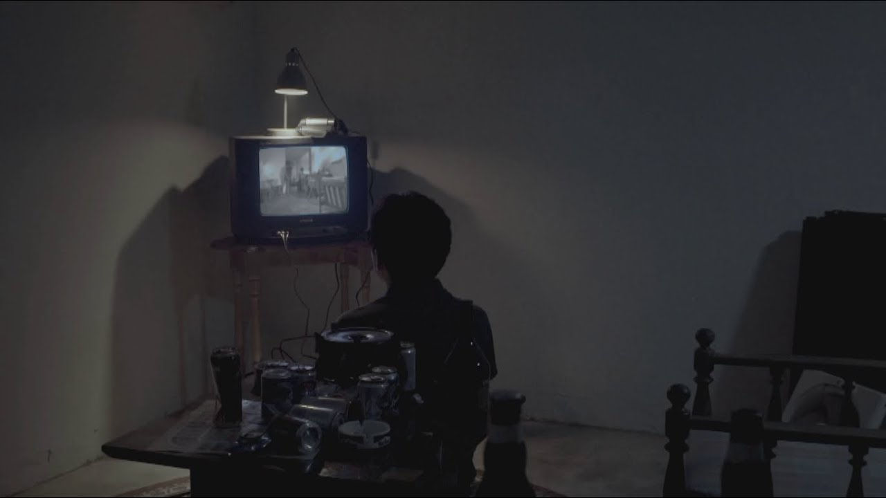
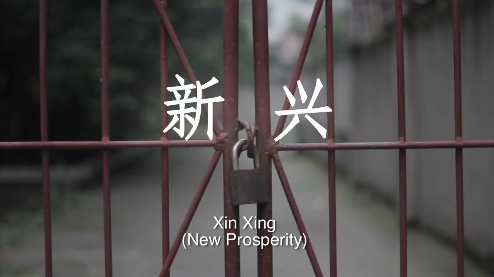

Play film ↗Explore Australia
We took a trip to Australia way back and brought home with us a bunch of new memories. No route and no plan, just a few people and their camper van.
Videography / 10 selected films
Weddings, corporate, multi-level marketing scams, etc

Play film ↗We took a trip to Australia way back and brought home with us a bunch of new memories. No route and no plan, just a few people and their camper van.
A social media marketing video commisioned for Chope‘s Year End Sale, featuring Vatos Urban Tacos.
Social media video commissioned by the Energy Market Authority to educate the general public on switching electricity retailers, as well as to promote their online retailer comparison platform, https://compare.openelectricitymarket.sg/.
Event teaser video shot for *SCAPE Singapore.

Play film ↗Cold Storage engaged us to craft a branding outreach video on the history of the company and it’s relations with everyday customers and front line workers.
Social media campaign video commissioned by Jim Beam to promote their highball event.
Pre-wedding video shot for Lovey and Cheeyuan, narrating their journey into marriage, as well as a few heartfelt snippets from family members.

Play film ↗Branding video crafted for the founder of Tangy Lab Group Pte Ltd, which is now actively used as part of their branding and marketing efforts.

Play film ↗A young man awakes in a lone household with no memory, accompanied by his seemingly deranged sister and the rotting body of an unsmiling dead man.

Play film ↗A documentary shot in Chengdu, China. In a rapidly developing province, the documentary exposes the troubles and worries that older families face when forced to move out of their childhood homes.